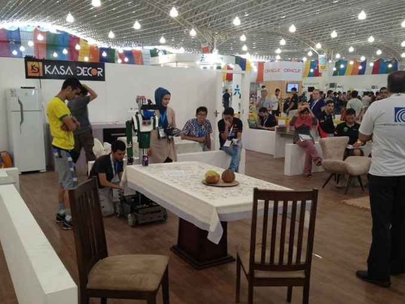

Our team has been founded in December 2007, which was known as “Sourena Team”. The first participation in the international competitions was at RoboCup 2008. In that competition, we had a good demonstration and achieved the 5th place. Also, we participated in RoboCup competitions three years in a row. Through these years, we have collected invaluable experiences which made our team stronger for future participation. At 2013, we built a new robot. This robot, called Sepanta, participated in AUTCup 2013 and achieved the 1st place. Then, we redesigned it and called this new version Sepanta II. It achieved the 8th place in Robocup 2014, Brazil, and 2nd place in IranOpen 2014 competitions. Now, Sepanta III is the latest version of our robot that will participate in the next competition.
My responsibilities in project:
- Software team lead for Sepanta II & I
- Indoor localization and mapping (SLAM)
- Human following and tracking
- Development of DCM (Device Communication Manager)
- Sepanta ROS software infrastructure designer
- Human robot interaction and behavior modules
- Open challenge idea designer
Sepanta can navigate in any indoor environments using its novel navigation and planning algorithms. Its uses the combination of Hector-SLAM solution and Odometry fustion with extended Kalman filter. Sepanta generates 2D maps using occupancy grid and cost map system in ROS navigation stack. It can make decision using dynamic obstacle avoidance algorithm and flexible path generation
 AUT@Home, João pessoa, Brazil 2014
AUT@Home, João pessoa, Brazil 2014Spepanta project covers many research activities such as ,SLAM (2D & 3D) - Navigation, Speech Recognition and TTS, Machine Vision & Machine Learning, ROS Framework, HRI – Human Robot Interaction, Object Recognition and Tracking, Motor Control, Inverse Kinematics, Mobile Robot Manipulation
Sepanta III ICROM 2016With this novel approach we can successfully follow the certain target even in occlusions or target lost situations. We don’t use any classification methods directly so we don’t need any training data before robot operation and robot can perform the follow tasks autonomously exactly after the first skeleton is tracked by skeleton tracker. Here the link for our last paper in IEEE which is describes the detail of this algorithm for human tracking.
Awards:
- IranOpen 2008 (3rd)
- RoboCup 2008 (5th)
- IranOpen 2009 (1st)
- IranOpen 2010 (3rd)
- AUTcup2012 (2nd)
- AUTcup2013 (1st)
- Iranopen2014 (2nd)
- Robocup2014 (8th)
A service robot or @Home is a robot that can operate at home. It can see the components of the house and the rooms (machine vision) to understand the surrounding environment and humans, also navigate in the indoor and outdoor environments without dealing with obstacles (obstacle avoidance)
For more information please visit the AUT@Home Sepanta webpages :
http://sar.aut.ac.ir/en/?p=96Robocup 2014, João pessoa, BrazilSepanta II qualification video 2016
Sepanta I qualification video 2014
Sepanta II base navigation test
Sepanta II teleoperation VR camera
Sepanta II voxel grid map generation
Sepanta I demo challenge
Sepanta project timeline
Sepanta project timeline